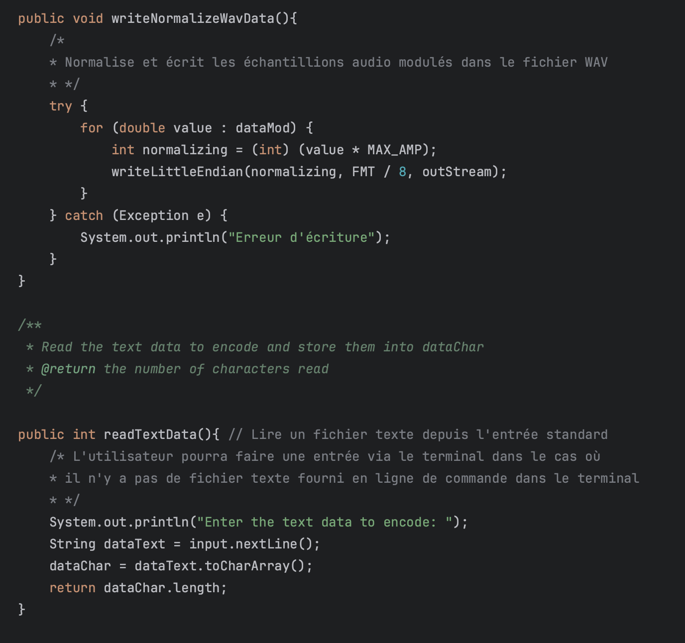
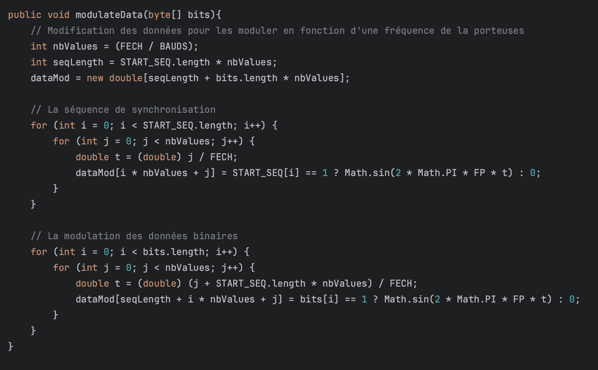
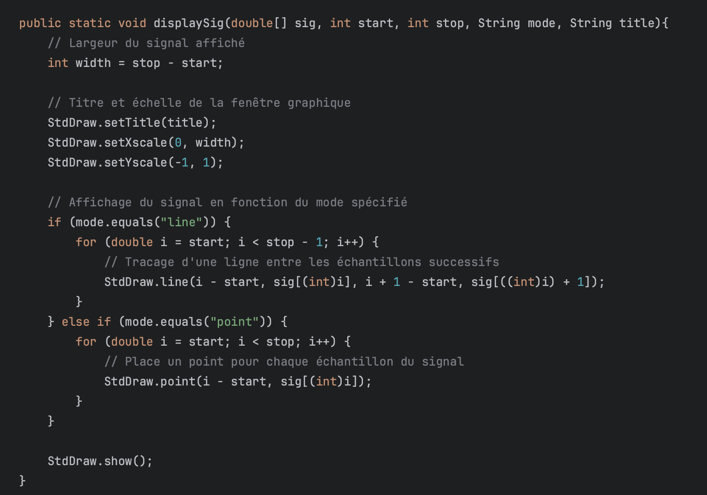
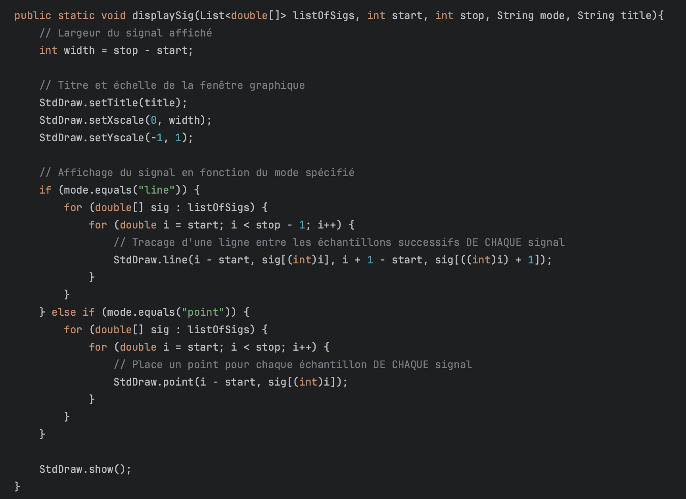

L'UE1 est une unité d'enseignement diversifiée qui comprend trois matières essentielles pour débuter en informatique : Initiation au développement pour les bases de programmation, Développement d'interfaces web pour la conception de sites internet, et l'Anglais, pour les compétences linguistiques dans le milieu professionnel. Elle inclut aussi une SAE, qui se baser principalement sur l’Initiation au développement.
Dans le cadre de la SAE 1, j'ai eu l'opportunité de coder un fichier nommé DosSend en Java qui était un programme émetteur pour un programme de son qui consiste à la transmisson de données textuelles simples par le son.




Grâce à l'UE1, j'ai pu acquérir de solides compétences en programmation, notamment en Java, ce qui m'a permis d'explorer de nouvelles méthodes pour coder des applications. L'approche pratique de la SAE a été particulièrement bénéfique, puisqu'elle m'a obligé à appliquer ces compétences dans un contexte réel.